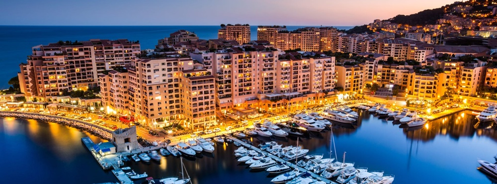
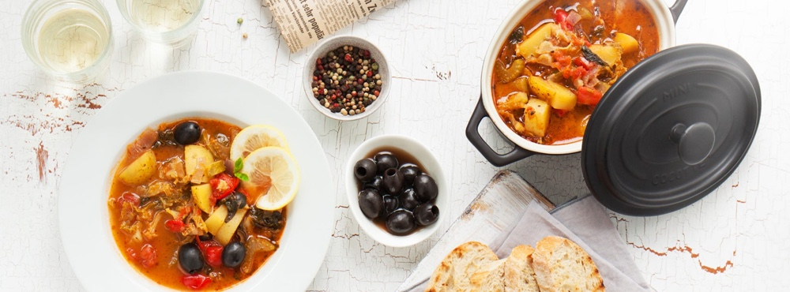
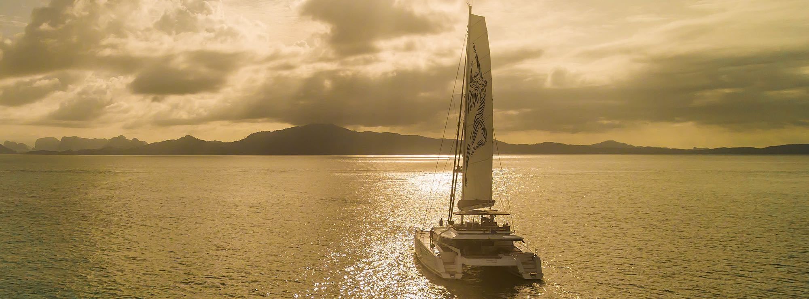
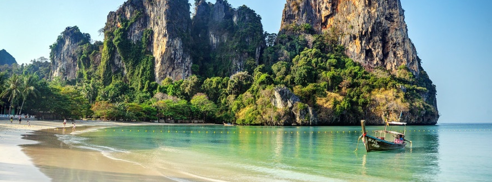
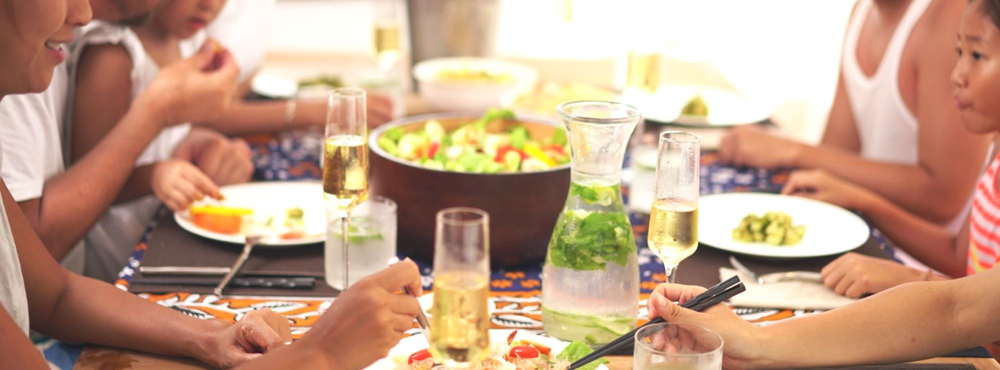

早安！(7:00)
周四晚间登船后，睡个好觉，到第二天开始你的航海探险之旅！上午7点开始，就能欣赏到攀牙湾的美景
以及享用丰盛的早餐了。
晨间活动 (10:00)
划独木舟探索洞穴
根据潮水的情况，驾驶独木舟或步行探索洞穴。
滑浪板
担心洞穴太暗太窄？没问题，那就沿着岛屿划独木
舟或玩滑浪板吧。
享用午餐 (12:00)
12:00摩根船长将召集大家回船，停泊在Ko Roi岛上享受船上大厨专门为您精心准备的海鲜午餐，同时饱
览沿途美景。
午餐后 (13:00)
向南航行前往天堂精品酒店
午间活动 (14:00)
水上活动
你可以选择滑水，短桨滑水或花式划水。
岸上活动
上岸享受私人沙滩和山涧清泉形成的泳池，或乾脆试试攀岩，探索岛内美丽的大树。
舒缓水疗
只想放松身心的话可以体验天堂精品酒店的传统泰式按摩。
晚餐时光 (19:00)
你可以在船上享用私人海鲜烧烤，饭后可选择夜钓，或是上岸在天堂精品酒店享用晚餐。
早安！(8:00)
起床后你将惊喜发现船只停泊在甲米岛海域最大的环礁湖中，在令人叹为观止的美景下享用美味早餐。
晨间活动 (9:00)
泻湖中浮潜
从船上跳下，潜入温暖的水中，目睹这个环礁湖里
的所有海洋生物。
滑水或乘摩托艇探索小岛
多么完美的清晨！这时最适合体验摩托艇或体验一
下其他像是滑水等活动。
晨间活动 (10:00)
向浮潜圣地Ko Dam Kwam小岛进发, 体验有趣刺激的浮潜和攀岩。
享用午餐 (12:00)
回到船上在海风吹拂下享受一顿令人胃口大开的泰式午餐。
午餐后 (13:00)
前往美丽的莱莉海滩。
午间活动 (14:00)

寻找秘密环礁湖
足够勇敢的游客，将在攀上一处僻静的世外桃源之
后，发现有个惊喜正等着你们喔！
丛林之旅
漫步在丛林，发现长臂猿，犀鸟和野生动物近距离接触。
在海滩上休息
如果活动得有些累，那就在沙滩上放松放松，或上
上潜水课。
晚餐时光 (19:00)
在游艇上享用私人海鲜烧烤，还是在泰国顶级酒店瑞亚维德享用晚餐？随你选择。
晚餐后 (21:00)
在船上喝杯酒和朋友分享今天的体验，早点休息为明天最后一天的行程留点体力。
早安！(8:00)
你可以早点起床欣赏日出，并在游艇上享用早餐，向北航行前往蛋岛，欣赏沿途的美，你可能还能看见当
地渔民捕鱼归来的景象呢！
晨间活动 (9:00)
出发前往滑水者最爱，也是摩根船长最爱的浮潜地点—— Ko Mai Phai小岛，你将发现时间彷佛在这岛上
凝结了 。沿途上你还可体验海钓。
晨间活动 (10:00)
喂鱼
如果不想弄湿头发，那就去浅滩喂鱼吧。
浮潜、钓鱼或网鱼
体验在友好的鱼群环绕之下跳入水中，数百条鱼在
您周围。或是尝试钓鱼，网鱼，把握这难得亲近海
洋的时光。
享用午餐 (12:00)
在蛋岛的海岛餐厅上享用午餐
午间活动 (14:00)
发现珍珠
前往Yang Rai岛，参观著名的珍珠养殖场；这里是
为您的公主买礼物的完美地点。
观赏燕窝
漫步在丛林，发现长臂猿，犀鸟和野生动物近距离接触。
在海滩上休息
去KohLipe，也就是泰国的燕窝岛，看看繁忙的雨
燕是怎么建设自己的家园的吧。
晚餐时光 (19:00)
在夕阳中的甲板上享受私人泰式晚餐，或登陆返回奥波码头。
晚餐后 (21:00)
晚餐后，您可以选择休息到本次航程结束，对于那些喜欢疯玩的游客，充满活力的普吉岛的夜生活在等着
你们！
 扫码或搜索“常青naked”关注我们
扫码或搜索“常青naked”关注我们